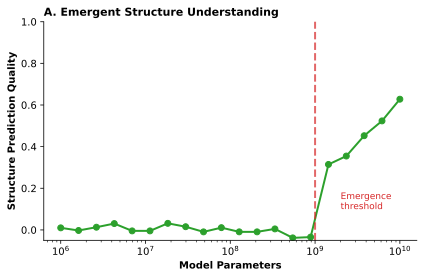
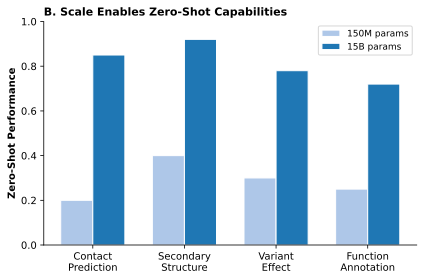
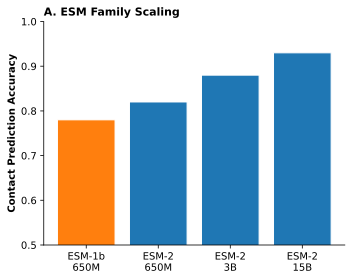
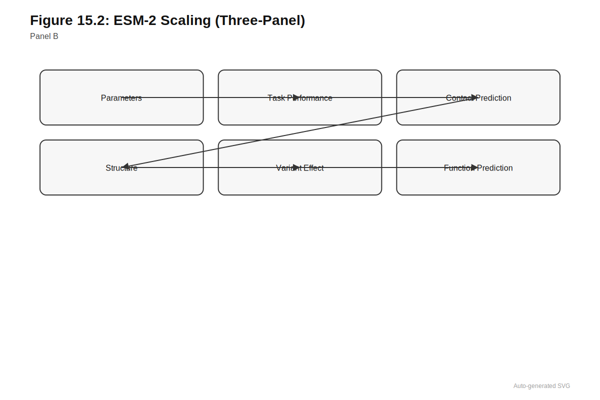
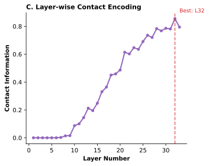
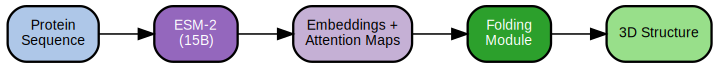
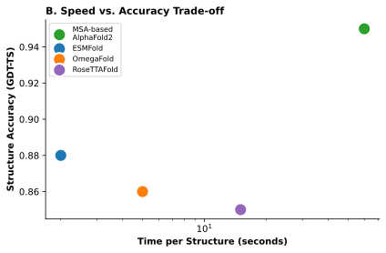
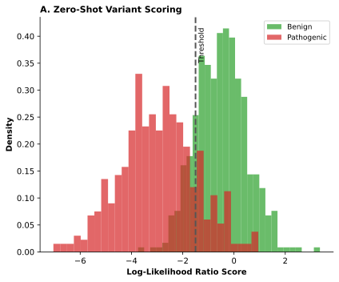
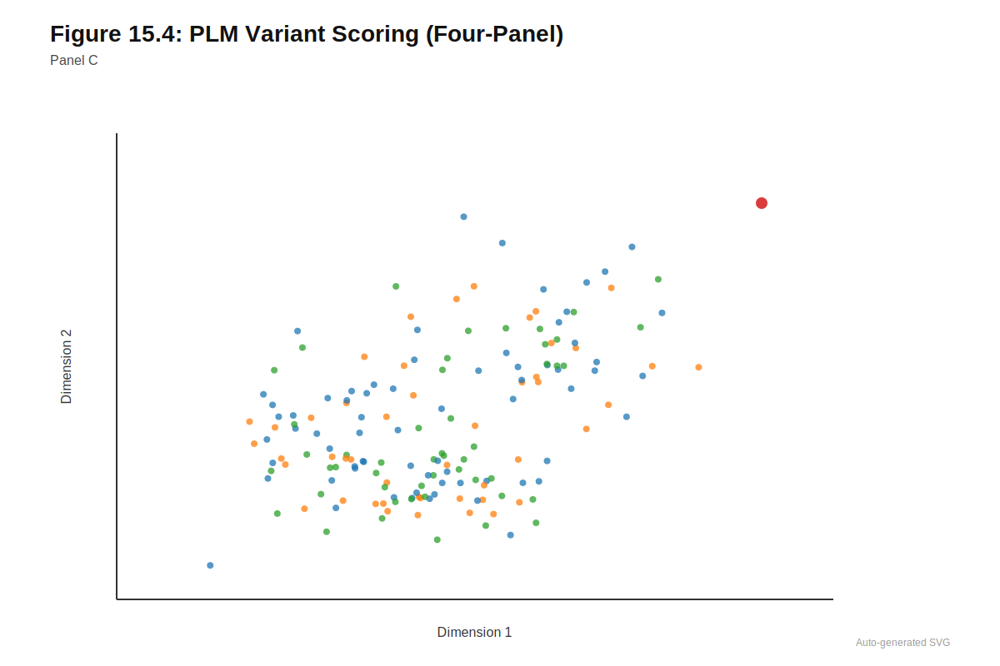
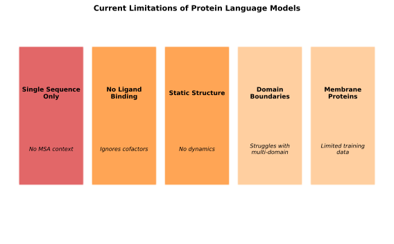

15 Protein Language Models
Evolution already solved the problem. Protein language models learned to read the answers.
Estimated reading time: 35-45 minutes
Prerequisites: Understanding of transformer architectures and self-attention (Chapter 7), masked language modeling objectives (Section 8.1), and basic protein biochemistry (amino acids, protein folding). Familiarity with DNA language models (Chapter 14) provides helpful context but is not required.
Learning Objectives: After this chapter, you should be able to:
- Explain how masked language modeling on protein sequences yields emergent biological knowledge (structure, contacts, function)
- Describe the ESM model family architecture and how capabilities scale with model size
- Articulate why attention patterns in PLMs capture evolutionary coupling and residue contacts
- Apply zero-shot variant effect prediction using log-likelihood ratios from PLMs
- Evaluate when PLM-based approaches succeed versus when they face fundamental limitations
Key Insight: Evolution has already solved the protein structure and function problem billions of times over. Protein language models learn to read those solutions from sequence statistics alone, extracting structural and functional knowledge that selection has encoded in surviving sequences.
Over billions of years, natural selection tested trillions of amino acid combinations, ruthlessly eliminating sequences that failed to fold or function while preserving those that worked. The sequences populating modern databases are not random strings but successful solutions to biological problems, each implicitly encoding information about structure, stability, and function. Think of protein databases as a massive answer key from billions of years of open-book exams. Evolution posed the same question trillions of times—“which sequences fold and function?”—and surviving proteins are the accumulated correct answers. The central insight of protein language models is that this evolutionary record, comprising hundreds of millions of sequences in databases like UniRef, contains sufficient information to learn the fundamental principles of protein biology without ever being shown a crystal structure or a functional assay.
For ML readers: Protein structure is hierarchically organized:
Primary structure: The linear sequence of amino acids (e.g., Met-Ala-Lys-Glu…). This is the input to protein language models.
Secondary structure: Local folding patterns:
- Alpha helix: spiral shape stabilized by hydrogen bonds between nearby residues
- Beta sheet: extended strands connected by hydrogen bonds
- Random coil/loops: unstructured regions connecting helices and sheets
Tertiary structure: The complete 3D arrangement of a single protein chain. Determined by:
- Hydrophobic residues packing into the protein core
- Disulfide bonds between cysteines
- Salt bridges between charged residues
Quaternary structure: Multiple protein chains assembled into a complex (e.g., hemoglobin has four subunits).
Why this matters for PLMs:
| Structure Level | What PLMs Learn | Evidence |
|---|---|---|
| Secondary | Attention patterns follow helix/sheet boundaries | Section 15.1.2 |
| Tertiary | Residue contacts visible in attention matrices | Contact prediction accuracy |
| Conservation | Constrained positions = high prediction confidence | Correlation with alignment-based metrics |
The remarkable finding is that training only on primary structure (sequences) yields models that implicitly encode higher-level structural information.
This insight transformed computational biology. Traditional approaches to understanding proteins required either expensive experimental characterization or physics-based simulations that struggled with the complexity of protein behavior. Multiple sequence alignments could extract conservation patterns, but required finding homologs for each protein of interest and could not generalize beyond specific families. Protein language models changed the equation by compressing evolutionary knowledge into neural network parameters that transfer across the entire protein universe. A model trained to predict masked amino acids learns, as a byproduct, which residues contact each other in three-dimensional space, which positions tolerate variation, and which substitutions disrupt function. The physics of protein folding, selected across evolutionary time, emerges from the statistics of surviving sequences.
The ESM family demonstrated that transformers can learn protein structure and function from sequence alone, achieving results that rival methods requiring explicit structural supervision. Evolutionary Scale Modeling, as the name suggests, exploits the scale of evolutionary data to learn representations that generalize across proteins regardless of homology or family membership. Understanding these successes and their limitations provides essential context for genomic language models, where analogous approaches face distinct challenges arising from the multi-scale organization of regulatory information in DNA (see Chapter 14).
15.1 ESM Model Family
The ESM (Evolutionary Scale Modeling) family developed at Meta AI Research represents the most influential protein language model lineage, progressing from an initial proof-of-concept to models capable of predicting three-dimensional structure from sequence alone. The progression from ESM-1b through ESM-2 illustrates how scaling transformer architectures yields systematic improvements in biological knowledge extraction, while revealing what self-supervised learning on protein sequences can and cannot achieve.
15.1.1 ESM-1b: Establishing the Paradigm
Before reading on, consider: if you wanted to teach a neural network about protein biology without providing any labels (no structure annotations, no function labels, no conservation scores), what training objective might you use? What information is implicitly present in the sequences themselves?
The Evolutionary Scale Modeling project demonstrated that transformer language models trained on protein sequences learn biologically meaningful representations without explicit supervision (Rives et al. 2021). The approach was strikingly simple: take the BERT architecture that had revolutionized natural language processing, replace words with amino acids, and train on protein sequence databases. The resulting models learned far more than anyone expected.
ESM-1b was trained on UniRef50, a clustered database of approximately 33 million protein sequences covering the known diversity of protein families. The construction and characteristics of protein sequence databases are detailed in Section 2.6, with implications for training data curation in Chapter 2. UniRef50 clusters sequences at 50% identity, providing broad coverage while reducing redundancy that would otherwise bias the model toward overrepresented families (Suzek et al. 2007). Why 50% specifically? This threshold represents a structural inflection point: proteins sharing >50% sequence identity almost always share the same fold, while proteins below 30% identity may have completely different structures despite some sequence similarity. Clustering at 50% thus preserves one representative per structural family while collapsing near-identical orthologs that would otherwise dominate training. This curation strategy ensures the model encounters diverse evolutionary solutions to protein function rather than memorizing common motifs.
The architecture follows the BERT-style bidirectional transformer design with 650 million parameters distributed across 33 layers, a hidden dimension of 1,280, and 20 attention heads. The maximum sequence length of 1,024 amino acids accommodates most individual protein domains and many complete proteins. The training objective is masked language modeling, the self-supervised strategy introduced in Section 8.1: randomly mask 15% of amino acids in each sequence, and train the model to predict the masked positions given surrounding context. This objective contains no information about structure, function, or evolution beyond what is implicit in the sequences themselves.
Why does masked language modeling teach the model about protein biology? The key is that proteins are not random sequences—they are products of evolution, shaped by physical and functional constraints. To accurately predict a masked amino acid, the model must learn what makes a sequence “protein-like.” At a buried core position, hydrophobic amino acids are overwhelmingly favored because charged residues would destabilize the fold. At an active site, specific catalytic residues are nearly invariant because alternatives abolish function. At the interface between two domains, co-evolved residues must fit together geometrically. The model cannot distinguish these cases without learning the underlying principles. Predicting masked tokens thus becomes a proxy for understanding protein constraints.
15.1.2 Emergent Biological Knowledge
The surprise was not that ESM-1b learned to predict masked amino acids accurately, but what else it learned in the process. Despite never seeing structural or functional labels during training, ESM-1b’s internal representations encode information about protein biology at multiple levels of organization.
Secondary structure emerges in the attention patterns. When researchers analyzed which sequence positions the model attends to when making predictions, they found that attention concentrates along patterns corresponding to alpha helices and beta sheets. The model implicitly learns that certain amino acid sequences form specific structural elements, encoding this knowledge without ever being told what secondary structure is.
More remarkably, ESM-1b captures residue-residue contacts. Amino acids that are distant in the linear sequence but close in three-dimensional space attend to each other in the model’s attention matrices. This emergent capability suggests the model learns aspects of protein folding purely from sequence statistics. When attention weights were converted to contact predictions, they achieved accuracy approaching dedicated contact prediction methods that were explicitly trained for that task.
The model was never told about protein structure, yet structure emerged. This is the central surprise of protein language models: the training objective (predict masked amino acids) is purely about sequence statistics, but the solution the model finds encodes structural relationships. Evolution has embedded so much physical information in sequence constraints that learning sequence patterns is, implicitly, learning structure.
The model’s masked token predictions correlate strongly with position-specific conservation scores derived from multiple sequence alignments. ESM effectively learns which positions tolerate variation and which are evolutionarily constrained, extracting this information from the statistical patterns across 33 million sequences rather than from explicit conservation annotations. Positions where the model confidently predicts specific amino acids correspond to positions that are conserved across protein families.
Perhaps most striking, attention concentrates on functionally important positions. Catalytic residues, binding sites, and other sites of biological importance receive elevated attention even without explicit functional annotation in the training data. The model identifies that certain sequence positions are more informative about surrounding context, and these positions frequently correspond to sites where nature has constrained variation because they perform essential functions.




Without looking back, can you articulate what biological knowledge emerges from ESM-1b despite the model never receiving explicit labels for these properties? List at least three types of emergent knowledge.
Check your answer
The model learns: (1) secondary structure patterns (alpha helices, beta sheets) visible in attention matrices, (2) residue-residue contacts between positions distant in sequence but close in 3D space, (3) evolutionary conservation patterns that identify constrained positions, and (4) functional site locations where catalytic residues and binding sites receive elevated attention.15.1.3 ESM-2: Scaling Up
ESM-2 extended the ESM approach across a range of model scales, from 8 million to 15 billion parameters, enabling systematic study of how biological knowledge scales with model capacity (Lin et al. 2022). The results confirmed a pattern familiar from natural language processing: bigger models learn more.
Before viewing the table below, make a prediction: How do you expect model performance to scale as parameters increase from 8 million to 15 billion (a ~2000-fold increase)? Will performance gains be linear, accelerating, or diminishing? At what point would you expect performance to plateau?
| Model | Parameters | Layers | Hidden Dim | Performance Gain |
|---|---|---|---|---|
| ESM-2 (8M) | 8M | 6 | 320 | Baseline |
| ESM-2 (35M) | 35M | 12 | 480 | Modest |
| ESM-2 (150M) | 150M | 30 | 640 | Substantial |
| ESM-2 (650M) | 650M | 33 | 1280 | Large |
| ESM-2 (3B) | 3B | 36 | 2560 | Near-optimal |
| ESM-2 (15B) | 15B | 48 | 5120 | State-of-the-art |
Performance scales smoothly with model size across structure prediction, contact prediction, and variant effect tasks. The scaling relationship is not linear: doubling parameters does not double accuracy. But gains remain consistent through even the largest models, suggesting that the 15-billion parameter ceiling reflects computational constraints rather than fundamental limits on what sequence statistics can teach.
Why does performance continue improving with scale? The answer lies in the complexity of the patterns the model must capture. Small models can learn common motifs and obvious constraints—the GT dinucleotide at splice donors, the hydrophobic core of globular proteins. But subtle patterns require more capacity: the coordinated positions of an allosteric network, the epistatic relationships between distant residues, the statistical signatures of rare folds. Each increase in model size allows the model to represent more of these subtle dependencies. The consistent gains across very different tasks (structure, contacts, variant effects) suggest that larger models learn more general biological principles, not just task-specific shortcuts.
The scaling behavior mirrors observations in natural language processing, where larger models consistently capture more nuanced patterns. This predictable relationship between scale and capability provides a roadmap for model development: if more biological knowledge is needed, train a larger model on more data. The practical implications shaped how the field approached subsequent genomic foundation models, with the scaling law framework and its implications discussed in Section 13.3.



15.2 Alternative Architectures
The success of ESM raised a natural question: how much depends on the specific BERT architecture versus the general approach of self-supervised learning on protein sequences? The ProtTrans family explored this question by applying multiple transformer architectures to protein modeling (Elnaggar et al. 2021).
ProtBERT applies the bidirectional encoder to protein sequences, trained on the Big Fantastic Database (BFD) comprising approximately 2.1 billion protein sequences. This training corpus, substantially larger than UniRef50, provides broader coverage at the cost of including more redundant and potentially lower-quality sequences. The architectural choices match ESM closely, enabling direct comparison of training data effects.
ProtT5 adapts the encoder-decoder architecture from T5, enabling both understanding and generation tasks (Raffel et al. 2023). The encoder processes input sequences to produce contextual representations, while the decoder can generate output sequences conditioned on those representations. This architecture proved valuable for tasks requiring sequence generation, such as structure-conditioned design or sequence completion, though the encoder-only architecture remains dominant for embedding and classification tasks.
ProtXLNet explores permutation language modeling, capturing bidirectional context without the artificial [MASK] token that BERT-style models require during training (Yang et al. 2020). By training on all possible token orderings, XLNet-style models learn to predict each token from any subset of context tokens, potentially capturing richer dependencies at the cost of more complex training.
| Architecture | Model | Key Feature | Strengths | Best Use Cases |
|---|---|---|---|---|
| Encoder-only (BERT) | ESM, ProtBERT | Bidirectional attention, MLM objective | Excellent embeddings, efficient inference | Classification, embedding extraction, variant scoring |
| Encoder-decoder (T5) | ProtT5 | Separate encoder/decoder, seq2seq capable | Generation tasks, flexible output | Sequence design, structure-conditioned generation |
| Autoregressive (XLNet) | ProtXLNet | Permutation language modeling | Richer dependencies, no [MASK] mismatch | Tasks sensitive to pretraining objective |
These architectural variants demonstrate that the protein language modeling paradigm generalizes beyond specific design choices. All architectures learn meaningful representations when trained on sufficient data, though performance differences emerge for specific downstream tasks. Encoder-only models excel at classification and embedding tasks where the entire sequence is available. Encoder-decoder models enable generation tasks where outputs must be produced token by token.
15.3 Attention and Evolutionary Coupling
Consider two amino acid positions in a protein that must physically contact each other for the protein to fold correctly. If a mutation at position A disrupts the contact, what evolutionary pressure would exist at position B? How might this leave a signature in sequence databases that a language model could detect?
The emergence of contact information in ESM’s attention patterns connects to a deeper principle: evolutionary coupling. When two residues must maintain physical contact for a protein to function, mutations at one position create selective pressure for compensatory mutations at the other. Over evolutionary time, these correlated mutations leave statistical signatures in protein families that can be detected through covariance analysis of multiple sequence alignments.
Direct Coupling Analysis (DCA) and related methods extract these coevolutionary signals to predict residue-residue contacts (Morcos et al. 2011). The approach requires constructing multiple sequence alignments, computing covariance matrices, and applying statistical corrections to distinguish direct from indirect correlations. The resulting contact predictions enabled the first accurate structure predictions for proteins lacking homologs in structural databases.
Protein language models learn to extract similar information through a different route. Rather than computing covariance explicitly, transformers learn attention patterns that capture which positions inform predictions at other positions. When position i strongly attends to position j during masked prediction, the model has learned that knowing the amino acid at j helps predict the amino acid at i. This is precisely the signature of evolutionary coupling: positions that covary because they must maintain physical contact.
Traditional coevolution analysis (DCA) requires computing alignments and covariance matrices for each protein family. PLMs learn to perform this analysis implicitly during training on millions of sequences, compressing the evolutionary logic into attention patterns that apply immediately to any new sequence. The attention mechanism rediscovers coevolution as the optimal strategy for predicting masked tokens.
The attention-based approach offers several advantages over traditional covariance analysis. Language models generalize across protein families, learning shared principles that transfer to proteins with sparse evolutionary sampling. They handle the statistical challenge of distinguishing direct from indirect correlations implicitly through deep architecture rather than requiring explicit correction. And they provide rich representations beyond binary contact predictions, encoding information about the strength and nature of residue relationships.
Rao and colleagues demonstrated this connection directly by extracting attention weights from ESM and converting them to contact predictions (Rao et al. 2020). The resulting predictions approached the accuracy of dedicated contact prediction methods, despite the model never being trained to predict contacts. The attention mechanism, optimized purely for masked token prediction, discovers the coevolutionary structure of protein sequences as a byproduct.
15.4 ESMFold: Structure from Sequence
Structure prediction has traditionally required multiple sequence alignments (MSAs) that search protein databases for evolutionary relatives, a process that can take hours per protein and fails entirely for sequences lacking detectable homologs. ESMFold demonstrated that the representations learned by ESM-2 contain sufficient evolutionary information to predict three-dimensional structure directly, eliminating the alignment requirement while maintaining competitive accuracy.
15.4.1 Alignment-Free Prediction
The most dramatic demonstration of protein language model capabilities came with ESMFold, which predicts protein 3D structure directly from ESM-2 embeddings without requiring multiple sequence alignments (Lin et al. 2022). Traditional structure prediction, including AlphaFold2, relies heavily on MSAs constructed through computationally expensive searches against sequence databases. These searches can take hours per protein, and prediction quality depends critically on finding informative homologs.
ESMFold eliminates this requirement entirely. The architecture couples ESM-2 (using the 15-billion parameter variant) with a structure module adapted from AlphaFold2’s Evoformer and structure module. The language model embeddings replace MSA-derived features, providing the evolutionary context that the structure module needs to predict atomic coordinates. The model takes a single sequence as input and outputs predicted 3D coordinates for all atoms.
The computational speedup is substantial: approximately 60-fold faster than AlphaFold2 for typical proteins. This speed advantage makes it feasible to predict structures for the millions of protein sequences emerging from environmental sequencing projects, where computing MSAs would be prohibitively expensive. Metagenomic proteins, often lacking close homologs in existing databases, represent exactly the cases where MSA-based methods struggle and where single-sequence predictions become essential.
ESMFold achieves atomic-level accuracy for many proteins, though slightly below AlphaFold2 for proteins that benefit strongly from MSA information. The accuracy gap is largest for proteins with sparse evolutionary sampling, where explicit alignments provide information that single-sequence analysis cannot fully recover. For well-represented protein families, ESMFold approaches AlphaFold2 accuracy at a fraction of the computational cost.
| Method | Input | Time per Protein | Best Accuracy Cases | Limitation Cases |
|---|---|---|---|---|
| AlphaFold2 | Sequence + MSA | Hours | Deep MSA available | Orphan proteins |
| ESMFold | Sequence only | Minutes | Well-represented families | Sparse evolutionary sampling |
Before continuing, pause and reflect: ESMFold predicts structure from single sequences in minutes while AlphaFold2 requires hours of MSA construction. What information does ESM-2 encode that makes this possible? Where did that information come from, given that the model was only trained to predict masked amino acids?




15.4.2 What ESMFold Reveals About PLMs
ESMFold’s success demonstrates that ESM-2’s internal representations encode sufficient information to determine 3D structure. The language model has learned not merely local sequence patterns but global folding principles, capturing what makes a sequence fold into a particular three-dimensional shape.
This has profound implications for understanding what protein language models learn. The attention patterns that emerge from masked prediction are, in some sense, learning the physics of protein folding. Residues that need to be close in 3D space to maintain stability attend to each other in the transformer’s attention matrices. The statistical patterns in protein sequences, shaped by billions of years of evolution under physical constraints, encode structural information that sufficiently powerful language models can decode.
The fundamental insight is that evolution has already solved the structure prediction problem, millions of times over, and recorded the solutions in sequence databases. Language models learn to read those solutions, extracting the implicit structural knowledge that selection has embedded in surviving sequences. The analogy to human language is illuminating: just as you learned grammar by reading millions of sentences without formal rules, PLMs learn protein “grammar” by reading millions of sequences without explicit physics lessons. The rules of protein folding emerge from pattern recognition, not from being taught what a hydrogen bond is.
AlphaFold2’s performance at CASP14 in 2020 solved a 50-year grand challenge, predicting protein structures with accuracy competitive with experimental determination (Jumper et al. 2021). The achievement transformed structural biology and earned its creators the 2024 Nobel Prize in Chemistry. Yet AlphaFold is not a foundation model in the sense this book uses the term (see Chapter 13). Understanding why illuminates what makes PLM-based approaches distinctive.
AlphaFold requires multiple sequence alignments as input. The Evoformer architecture processes MSA features alongside the query sequence, using attention mechanisms that operate over both the sequence dimension and the alignment dimension. Evolutionary information enters the model explicitly through database search rather than being learned implicitly from sequence data. This design choice has computational consequences: MSA construction can take hours per protein, and prediction quality depends critically on finding informative homologs. For orphan proteins lacking close relatives in sequence databases, AlphaFold’s accuracy degrades substantially.
The architectural innovations that enabled AlphaFold’s success differ fundamentally from the foundation model paradigm. Evoformer’s attention over MSA rows and columns, iterative recycling through the network, and the structure module’s SE(3)-equivariant operations represent expert-designed inductive biases encoding protein physics. These components were engineered specifically for structure prediction, not learned from self-supervised objectives on broad sequence data. The model excels at its designed task but does not produce general-purpose representations transferable to other problems.
ESMFold inverts this design philosophy. Rather than requiring explicit evolutionary input, ESMFold couples ESM-2 embeddings with a structure module adapted from AlphaFold’s architecture. The language model provides the evolutionary context that the structure module needs, context learned implicitly through masked token prediction on millions of protein sequences. A single sequence goes in; predicted coordinates come out. No MSA construction, no database search, no hours of preprocessing.
The comparison reveals what protein language models have and have not learned. ESMFold approaches AlphaFold accuracy for well-represented protein families where the language model’s training data provided dense evolutionary sampling. The gap widens for proteins where deep MSAs provide information that single-sequence analysis cannot fully recover. ESMFold runs approximately 60-fold faster than AlphaFold, enabling structure prediction at metagenomic scale for the millions of protein sequences emerging from environmental sequencing projects. The two approaches exhibit different failure modes: AlphaFold struggles with orphan proteins that lack homologs; ESMFold struggles with sequences the language model finds surprising (high perplexity), even when homologs exist.
AlphaFold3 complicates this dichotomy (Abramson et al. 2024). The updated architecture uses diffusion-based structure generation and handles protein-ligand, protein-nucleic acid, and multi-chain complexes within a unified framework. MSA dependency is reduced in some contexts, and the model moves toward general biomolecular structure prediction rather than single-chain protein folding. Whether this represents convergence between task-specific and foundation model approaches remains an open question.
AlphaFold demonstrated that protein structure prediction was computationally tractable; ESMFold demonstrated that foundation models had learned enough biology to solve it differently. Both insights matter. For this book’s purposes, ESMFold illustrates the foundation model paradigm: self-supervised pretraining produces representations that transfer to downstream tasks, including tasks (like structure prediction) that were not part of the training objective. AlphaFold’s success through architectural engineering rather than learned representations represents an alternative path, one that achieved the goal first but may prove less generalizable as the field matures. The AlphaMissense model discussed in Chapter 17 repurposes AlphaFold’s structure module for variant effect prediction, suggesting that even task-specific architectures can seed broader applications when their components prove useful beyond their original context.
15.5 Function Prediction
Beyond structure, protein language models enable prediction of protein function directly from sequence. Function prediction encompasses multiple tasks: predicting Gene Ontology terms that describe molecular function, biological process, and cellular component; classifying enzyme activity; identifying binding sites and interaction partners; and predicting subcellular localization.
Traditional function prediction relied on homology: proteins similar in sequence are assumed to share function. This approach fails for orphan proteins lacking characterized homologs and cannot distinguish functional differences between closely related sequences. PLM-based approaches address both limitations by learning representations that capture functional signatures beyond simple sequence similarity.
For Gene Ontology term prediction, PLM embeddings serve as input features to classification models that predict which GO terms apply to each protein. The embeddings capture evolutionary and structural information relevant to function, enabling accurate predictions even for proteins with limited homology to characterized sequences (kulmanov_deepgo-se_2024?). Performance improves with embedding quality, suggesting that larger language models capture more functionally relevant information. These embeddings can also serve as node features in biological network analyses (?sec-ch18-fm-embeddings), and the function predictions inform drug target identification workflows (?sec-ch27-variant-to-gene).
Enzyme classification benefits similarly from PLM representations. The Enzyme Commission hierarchy categorizes enzymes by the reactions they catalyze, from broad classes (oxidoreductases, transferases) to specific substrate preferences. PLM embeddings distinguish these categories effectively, capturing the sequence features that determine catalytic activity without requiring explicit structural analysis (sanderson_deepectransformer_2023?).
Binding site prediction applies attention analysis to identify which residues participate in ligand binding, protein-protein interactions, or nucleic acid recognition. Positions that the model identifies as important for contextual prediction often correspond to functionally important sites, including binding pockets and catalytic residues (fang_deepprosite_2023?). This capability enables rapid identification of functional sites in newly sequenced proteins.
A researcher has a novel protein sequence from an environmental sample with no detectable homologs in existing databases. Which PLM-based predictions would you expect to be most reliable, and which would be most uncertain? Consider: structure prediction, function prediction, and variant effect prediction.
Consider before revealing
For orphan proteins, variant effect prediction may be most uncertain because the model has limited evolutionary context for what is “normal” at each position. Function prediction via GO terms will also struggle if the protein represents a truly novel functional category. Structure prediction via ESMFold may perform surprisingly well if the protein uses common structural motifs even without close homologs, though unusual folds will be challenging. The fundamental limitation is that all PLM capabilities ultimately derive from patterns learned across evolutionary data, making truly novel proteins inherently difficult.15.6 Variant Effect Prediction
A critical clinical application of protein language models is predicting the effects of amino acid substitutions. Missense variants are the most common type of protein-coding mutation, and clinical genetics pipelines must routinely assess whether specific substitutions are likely pathogenic or benign. The traditional approach required either direct experimental characterization or computational methods trained on labeled pathogenicity data, both of which scale poorly to the millions of possible variants in each human genome (see Chapter 4 for discussion of classical approaches).
The following section uses log-likelihood ratios from the language model to score variants. If you are unfamiliar with log probabilities, the intuition is: the model assigns a probability to each possible amino acid at each position. If the model thinks the mutant amino acid is less likely than the wild-type, the variant receives a negative score (predicted deleterious). If the mutant is equally or more likely, the variant receives a zero or positive score (predicted benign).
ESM-1v demonstrated that PLMs can predict variant effects without any training on variant labels (Meier et al. 2021). The approach exploits the masked language modeling objective directly: for a variant at position \(i\) changing amino acid \(a\) to amino acid \(b\), compute the log-likelihood ratio:
\[ \Delta \text{score} = \log P(b \mid \text{context}) - \log P(a \mid \text{context}) \]
If the model assigns higher probability to the mutant amino acid than the wild-type, the variant is predicted benign; if lower, deleterious. This zero-shot prediction requires no labeled training data. The model’s evolutionary knowledge, learned from sequence databases, directly informs variant interpretation.
The intuition is straightforward. Evolution has shaped protein sequences such that certain positions strongly prefer certain amino acids. Substitutions that violate these preferences are more likely to disrupt function. The language model captures these preferences through training on millions of evolutionarily successful sequences. Variants that the model finds surprising are more likely to be functionally disruptive.
Consider a protein position where the wild-type amino acid is glycine (small, flexible) and a variant introduces tryptophan (large, bulky). Without knowing anything about the protein’s function, why might a protein language model assign low probability to this substitution? What evolutionary patterns would the model have learned during training that make this substitution “surprising”?
Zero-shot variant prediction inverts the typical ML workflow. Instead of training on labeled variant data (benign vs. pathogenic), the model learns what “normal” looks like from evolutionary data. Abnormal variants are detected as deviations from learned expectations, requiring no pathogenicity labels whatsoever. This explains why PLM scores generalize across proteins: they measure violation of evolutionary constraint rather than matching patterns of known pathogenic variants.




Brandes and colleagues applied ESM-1b to predict effects for all approximately 450 million possible missense variants in the human genome, providing a precomputed resource for clinical variant interpretation (Brandes et al. 2023). On ClinVar benchmarks, ESM-1b outperformed existing methods in classifying variants as pathogenic or benign.
AlphaMissense extended this approach by combining PLM representations with structural context from predicted protein structures (Cheng et al. 2023). The integration of sequence-based and structure-based signals improves accuracy, particularly for variants affecting protein stability or buried residues. AlphaMissense provides predictions for all approximately 71 million possible single amino acid substitutions in the human proteome.
The detailed comparison of variant effect prediction methods, including how PLM-based scores integrate with clinical classification frameworks, is covered in Section 17.2.3. The calibration of these scores to ACMG criteria appears in ?sec-ch14-acmg-mapping, and integration into rare disease diagnostic workflows in ?sec-ch26-fm-scoring. Here, the key point is that protein language models provide the foundational representations that make accurate zero-shot variant prediction possible.
- For quick screening: Use precomputed scores from ESM-1b (450M variants) or AlphaMissense (71M proteome-wide). Available through databases and APIs.
- For novel proteins: Run ESM-1v or ESM-2 inference directly. Larger models (650M+) generally perform better.
- For structural context: Consider AlphaMissense when protein structure is relevant to the variant mechanism (buried residues, stability effects).
- For integration with clinical pipelines: PLM scores are one line of evidence among many. See Chapter 17 for integration with ACMG criteria and other computational evidence.
- Limitations to remember: Zero-shot scores reflect evolutionary constraint, not direct pathogenicity. A constrained position is likely functionally important, but not all variants at important positions cause disease.
15.7 Integration with Structure Prediction
Protein language models exist within a broader ecosystem of computational methods for protein analysis. Understanding how PLMs relate to structure prediction systems clarifies their role and capabilities.
AlphaFold2 achieved breakthrough accuracy in structure prediction by combining learned representations with explicit geometric modeling (Jumper et al. 2021). The architecture processes both sequence information through embeddings and evolutionary information through multiple sequence alignments, using an attention-based module (Evoformer) to integrate these signals before predicting atomic coordinates. AlphaFold2’s success depended critically on MSA quality: proteins with many homologs could be predicted accurately, while orphan proteins remained challenging.
ESMFold demonstrated that PLM embeddings can replace MSA-derived features, achieving competitive accuracy without the alignment bottleneck. This finding clarified the relationship between language models and structure prediction: PLMs learn to compress evolutionary information into representations that are functionally equivalent to explicit alignments, at least for proteins with sufficient representation in training databases.
AlphaFold3 extended structure prediction to protein complexes, nucleic acids, and small molecules (Abramson et al. 2024). The architecture incorporates diffusion-based generation, enabling prediction of binding poses and complex assemblies. These capabilities complement PLM-based function prediction by providing structural context for interpreting functional predictions.
Generative protein design methods including RFDiffusion and ProteinMPNN leverage both structural and sequence information (Watson et al. 2023; Dauparas et al. 2022). RFDiffusion generates novel protein backbones through diffusion processes conditioned on design objectives. ProteinMPNN designs sequences likely to fold into specified structures. Both methods benefit from PLM representations when designing sequences with desired functional properties, demonstrating how language models integrate into the broader protein engineering pipeline (see Chapter 30 for detailed treatment of sequence design methods).
The trajectory from ESM to ESMFold to integration with design tools illustrates how PLMs serve as a foundation for diverse downstream applications. The representations learned through self-supervised training transfer across tasks, providing a common language for structure prediction, function annotation, variant interpretation, and protein engineering. This pattern of foundation models enabling diverse applications recurs throughout genomic AI, as discussed in Chapter 13.
15.8 Limitations
Despite their success, protein language models face several limitations that inform the development of genomic models and guide appropriate application.

15.8.1 Orphan and Dark Proteins
PLMs learn from evolutionary statistics, performing best for proteins with rich representation in training databases. Orphan proteins, those unique to specific lineages without detectable homologs, lack the evolutionary context that PLMs exploit. For these proteins, the model has no basis for distinguishing likely from unlikely amino acids at each position, and predictions degrade accordingly.
The problem extends to “dark” proteins that are poorly characterized despite having homologs. If an entire protein family has escaped experimental characterization, PLMs may learn statistical patterns without capturing functional relevance. The model cannot distinguish constraint imposed by function from constraint imposed by historical accident.
15.8.2 Novel Folds
Training data shapes what models can predict. PLMs trained on natural protein databases learn the statistical patterns of naturally occurring folds, potentially struggling with designed proteins or hypothetical folds outside the training distribution. When researchers design proteins with novel topologies not found in nature, PLM predictions become less reliable because the relevant sequence patterns were never encountered during training (verkuil_language_2022?).
15.8.3 Conformational Flexibility
Most PLM representations assume a single static structure, but many proteins adopt multiple conformations relevant to function. Allosteric proteins, intrinsically disordered regions, and proteins that undergo conformational changes upon binding present challenges for methods that embed each sequence into a single representation. The language model learns the average properties of sequences but may not capture the dynamic range that determines biological behavior.
15.8.4 Epistasis
Most variant effect predictions assume independence: the effect of mutation A does not depend on whether mutation B is present. Real proteins exhibit epistasis, where variant effects depend on sequence context. Two individually benign variants may be jointly deleterious if they disrupt compensatory interactions. Current PLM-based predictors model marginal effects at each position but do not explicitly capture higher-order interactions, though the contextual embeddings may represent some epistatic relationships implicitly.
Why is epistasis so difficult to model? The challenge is combinatorial: with 20 amino acids at each position, predicting all pairwise interactions for a 300-residue protein requires assessing \(20^2 \times \binom{300}{2} \approx 18\) million combinations. Higher-order interactions grow exponentially worse. PLMs sidestep this by learning correlations from data rather than enumerating possibilities, but the training data rarely includes systematic measurements of multi-mutant effects. Deep mutational scanning typically measures single-mutant effects; double and higher-order mutants are exponentially rarer in experimental datasets. The model thus learns what it can observe, and complex epistatic interactions remain largely unobserved.
15.8.5 Interpretability
While attention patterns correlate with biological features, understanding exactly what PLMs learn remains challenging. The field is developing interpretation methods, including attention pattern analysis (Section 24.5) and probing studies (Section 24.4), but PLMs remain partially opaque. The distinction between plausible and faithful explanations, critical for clinical applications, is examined in Chapter 24. For clinical applications where explanations matter, this interpretability gap limits adoption. A prediction that a variant is pathogenic is more useful when accompanied by mechanistic insight into why the variant disrupts function.
Consider applying a PLM to predict variant effects in two scenarios: (1) a well-characterized human enzyme with thousands of known homologs, and (2) a viral protein from a newly emerged pathogen with only a few known relatives. Which PLM limitations are most relevant in each case? How might you adjust your interpretation of the predictions accordingly?
Before moving forward, test your understanding of PLM limitations:
- Why do orphan proteins pose challenges for protein language models?
- If you designed a completely novel protein fold not found in nature, why might ESMFold struggle to predict its structure accurately?
- How does the independence assumption in variant effect prediction fail to capture epistatic interactions?
Check your understanding
Orphan proteins lack evolutionary context. PLMs learn from statistical patterns across protein families—they identify which amino acids are likely at each position based on what evolution has “tried” and preserved. For proteins unique to specific lineages without homologs, the model has no evolutionary data to learn from, making predictions unreliable.
Novel folds lie outside the training distribution. The model learned sequence-structure relationships from natural proteins in its training data. A computationally designed fold with topology not found in nature represents patterns the model never encountered during training, reducing prediction reliability.
Epistatic interactions occur when variant effects depend on sequence context. The standard scoring approach treats each position independently, computing the effect of mutation A without considering whether mutation B is present. But two individually benign variants may be jointly deleterious if they disrupt compensatory interactions. The combinatorial explosion of pairwise and higher-order interactions makes explicit modeling intractable, and training data rarely includes systematic multi-mutant measurements.
15.9 Lessons for Genomic Foundation Models
The success of protein language models established principles that guided subsequent development of genomic foundation models. These lessons transfer with appropriate modifications to DNA and RNA modeling.
15.9.1 Self-Supervised Biological Knowledge
PLMs demonstrated that massive amounts of biological knowledge can be learned from unlabeled sequences. The same evolutionary pressures that shape proteins also shape DNA. Purifying selection removes deleterious variants, leaving statistical signatures in sequence databases that self-supervised models can exploit. This principle underlies the entire foundation model paradigm: sufficiently large models trained on sufficiently large datasets with appropriate objectives will learn representations that capture biological function.
15.9.2 Scaling Benefits
Performance improves predictably with model size through the range currently explored. The progression from 8 million to 15 billion parameters in ESM-2 showed consistent gains across structure prediction, contact prediction, and variant effect tasks. While scaling cannot continue indefinitely, current models remain in a regime where additional capacity yields reliable improvements. This relationship justified the computational investment in large genomic foundation models (see Chapter 13 for discussion of scaling laws in genomic contexts).
15.9.3 Effective Transfer Learning
Representations learned for one task (masked token prediction) transfer to other tasks (structure prediction, variant effects, function annotation). This suggests that self-supervised pretraining captures fundamental biological knowledge rather than task-specific shortcuts. A model trained to predict masked amino acids simultaneously learns about protein structure, function, evolutionary constraint, and disease relevance. The same principle motivates genomic language models: models trained to predict masked nucleotides may simultaneously learn about regulatory elements, evolutionary conservation, and variant effects. Transfer learning strategies, including fine-tuning approaches and parameter-efficient adaptation, are discussed in detail in Chapter 9, with specific guidance on choosing between these strategies in ?sec-ch09-choosing-strategy.
15.9.4 Architecture-Sequence Matching
The BERT-style bidirectional encoder proved effective for proteins, where entire sequences are typically available and lengths rarely exceed a thousand residues. Genomic sequences present different challenges: much longer lengths spanning kilobases to megabases, different information density with coding regions being dense while intergenic regions are sparser, and structural features including reverse-complement relationships absent in proteins. These differences motivate architectural adaptations in genomic language models, as explored in Chapter 14.
15.9.5 Integration Benefits
AlphaMissense demonstrated that PLM embeddings combine effectively with structural and population genetics information, achieving accuracy beyond what any single information source provides. The most powerful methods integrate multiple signals, using PLMs as one component of larger systems. This principle extends to genomic foundation models, where sequence-based representations complement rather than replace functional annotations, chromatin data, and clinical information (see Chapter 17 for variant effect prediction integration strategies).
15.10 Paradigm That Generalized
Protein language models established that transformer architectures can learn deep biological knowledge from sequence alone. ESM’s ability to predict structure, function, and variant effects without explicit labels demonstrated the power of self-supervised learning on evolutionary data. The framework validated a paradigm: treat biological sequences as language, train large models to predict masked tokens, and extract functional knowledge from learned representations. Attention patterns in these models capture evolutionary constraint, contact prediction, and structural relationships without requiring multiple sequence alignments or explicit structural supervision.
This success directly motivated genomic language models. If proteins constitute a language that transformers can learn, perhaps DNA does too. The DNA language models examined in Chapter 14 adapt protein language model architectures and training strategies to the distinct challenges of genomic sequences: longer contexts, different alphabets, ambiguous tokenization, and the full complexity of gene regulation beyond protein coding. RNA language models occupy an intermediate position, sharing features with both protein and DNA modeling while addressing the unique challenges of RNA structure and processing.
The integration path extends beyond sequence modeling. Just as protein language model representations feed into structure prediction (ESMFold) and variant effect prediction (AlphaMissense), genomic language model embeddings integrate into regulatory models (Chapter 16) and clinical applications (Chapter 28, Chapter 27). Protein design methods (Chapter 30) demonstrate how generative modeling builds on the representations that language models provide. Throughout this progression, the principle that ESM established remains: self-supervised learning on biological sequences captures knowledge that transfers across diverse applications.
Before reviewing the summary, test your recall:
- How does masked language modeling on protein sequences lead to emergent knowledge about protein structure and function? What specific types of biological information emerge without explicit supervision?
Masked language modeling requires the model to predict hidden amino acids from surrounding context. To succeed, the model must learn what makes sequences “protein-like”—the constraints imposed by evolution. Emergent knowledge includes: (1) secondary structure (alpha helices, beta sheets visible in attention patterns), (2) residue-residue contacts (spatially close amino acids attend to each other), (3) evolutionary conservation (constrained positions receive confident predictions), and (4) functional sites (catalytic residues, binding sites receive elevated attention). These properties emerge because evolutionary and physical constraints shape which amino acid combinations survive, embedding structural and functional information in sequence statistics.
- Explain the connection between attention patterns in protein language models and evolutionary coupling. Why do attention weights correlate with residue-residue contacts in 3D structure?
Evolutionary coupling occurs when two residues must maintain physical contact for protein function. If mutation at position A disrupts the contact, selection favors compensatory mutations at position B. This creates correlated mutations across evolutionary time. Protein language models learn that knowing the amino acid at position B helps predict the amino acid at position A—precisely the signature of evolutionary coupling. The model learns to attend to positions that provide predictive information, and these often correspond to spatially proximate residues that coevolve. The attention mechanism thus rediscovers coevolution as the optimal strategy for masked token prediction.
- How does ESMFold predict protein structure without multiple sequence alignments? What enables this, and what are the performance tradeoffs compared to AlphaFold2?
ESMFold uses ESM-2 embeddings as input to a structure prediction module adapted from AlphaFold2’s architecture. The language model embeddings, learned from masked token prediction on millions of sequences, encode evolutionary information that replaces explicit MSA-derived features. This works because the model has compressed evolutionary patterns into its parameters during pretraining. Tradeoffs: ESMFold is ~60× faster (minutes vs. hours) and handles orphan proteins better, but achieves slightly lower accuracy for proteins where deep MSAs provide information that single-sequence analysis cannot fully recover. The gap is largest for proteins with sparse evolutionary sampling.
- Describe how protein language models perform zero-shot variant effect prediction using log-likelihood ratios. Why does this approach work for distinguishing pathogenic from benign variants?
Zero-shot scoring computes: Δscore = log P(mutant | context) - log P(wild-type | context). If the model assigns lower probability to the mutant amino acid than the wild-type, the variant is predicted deleterious. This works because the model learned evolutionary preferences from millions of successful sequences. Evolution eliminates functionally disruptive variants, leaving statistical signatures that the model captures. Variants the model finds “surprising” (low probability) often violate evolutionary constraints, indicating likely functional disruption. The approach requires no pathogenicity labels—it measures deviation from learned evolutionary expectations rather than matching patterns of known pathogenic variants.
- What are three fundamental limitations of protein language models? For each limitation, explain what type of information the model lacks and why self-supervised sequence training cannot provide it.
(1) Orphan proteins: Proteins without homologs lack evolutionary context. PLMs learn from statistical patterns across families, but orphan proteins provide no family data to learn from. (2) Novel folds: Designed proteins with topologies not found in nature lie outside the training distribution. The model learned sequence-structure relationships from natural proteins; completely novel folds represent patterns never encountered. (3) Epistatic interactions: Standard scoring assumes variant effects are independent, but real proteins show epistasis where effects depend on sequence context. The combinatorial explosion makes explicit modeling intractable, and training data rarely includes systematic multi-mutant measurements to learn higher-order interactions.
Key Concepts Covered:
- ESM model family: Transformer-based protein language models trained on masked language modeling, from ESM-1b (650M parameters) through ESM-2 (up to 15B)
- Emergent knowledge: Structure, contacts, conservation, and functional sites emerge from sequence training without explicit labels
- Evolutionary coupling: Attention patterns learn coevolutionary relationships between residues that must maintain physical contact
- ESMFold: Single-sequence structure prediction using PLM embeddings, 60x faster than AlphaFold2
- Zero-shot variant prediction: Log-likelihood ratios from PLMs score variants without pathogenicity training data
- Limitations: Orphan proteins, novel folds, conformational flexibility, epistasis, and interpretability
Main Takeaways:
Evolution has encoded protein structure and function in sequence statistics. PLMs learn to decode this information through self-supervised training.
The training objective (predict masked amino acids) is simple, but what the model learns to achieve this objective is profound: structural relationships, evolutionary constraints, and functional importance.
PLM capabilities scale predictably with model size, providing a roadmap for development.
Zero-shot variant prediction works because the model has learned what “normal” looks like from evolutionary data. Abnormal variants are detected as deviations from expectations.
PLMs face fundamental limitations for sequences outside evolutionary training distributions (orphan proteins, novel folds) and struggle with dynamic properties (conformational flexibility, epistasis).
Connections to Other Chapters:
- DNA language models (Chapter 14) adapt this paradigm to genomic sequences
- Variant effect prediction methods (Chapter 17) integrate PLM scores with other evidence
- Protein design (Chapter 30) builds on PLM representations for generative tasks
- Interpretability methods (Chapter 24) probe what PLMs have learned